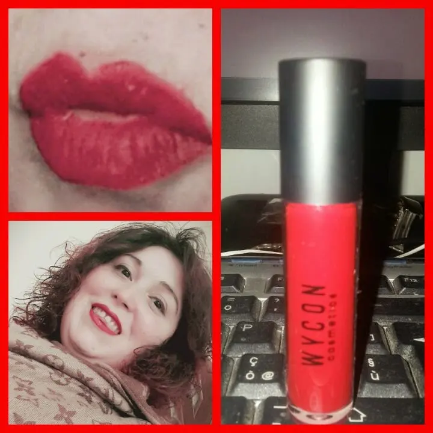

Tinta labbra wjcon: linea makeup artist
Salve fanciulle.
Come va? Oggi volevo parlarvi della linea Wjcon.
Conoscete questo marchio sicuramente..Se ne parla ormai dappertutto, tra le blogger, youtuber e varie persone che usano makeup tutti i giorni.
Vi parlo oggi della tinta labbra..sta spopolando per il web e posso dire che tutte le tonalità sono davvero bellissime.
Sono sincera è la prima volta per me che provo la wjcon, per il mio compleanno ho chiesto come regalo questa tinta e l'eyeliner nera.
La tinta è decisamente bella bella.
Vi mostro la foto:

Io che adoro il rossetto rosso non potevo che scegliere rosso ciliegia.
Inizialmente è molto lucido poi si secca ed adoro proprio il fatto che diventa Matt.
Quasi a non sentirlo sulle labbra.
Molte ragazze ne parlano in modo fantastico di queste tinta, io posso dire che anche se è di lunga durata, a me dopo qualche ora all'interno del labbro si toglie del tutto, lasciando solo il labbro superiore intatto e il contorno del labbro inferiore.
Ho provato a metterlo sia da solo che con una matita rossa sotto così da poter fissare, ma niente, il risultato non cambia.
Tutto sommato però a me piace come colore e anche come rossetto. Lo userò quando non dovrò tenerlo per molte ore ihihih
Voi che ne pensate??